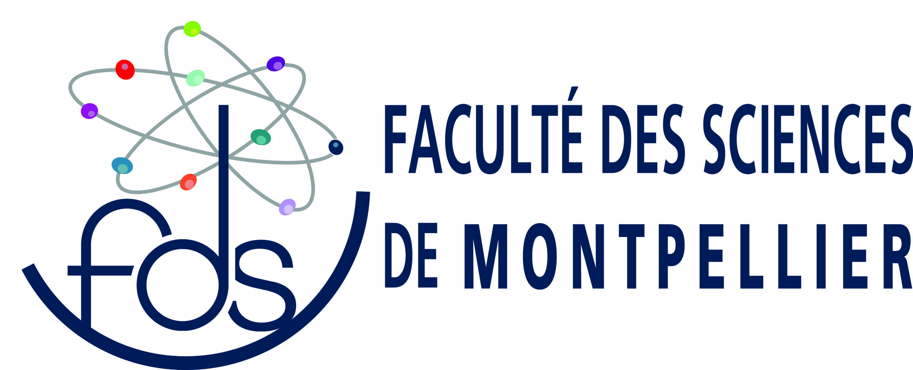

Bonjour et Bienvenue
Je suis étudiant actuellement inscrit en Master II de mathématiques appliquées en modelisation et analyse numérique à la faculté des sciences de l'université de Montpellier.
Sur ce site, je vous ferais part de mon parcours ainsi que certains des projets que j'ai eu à faire.
